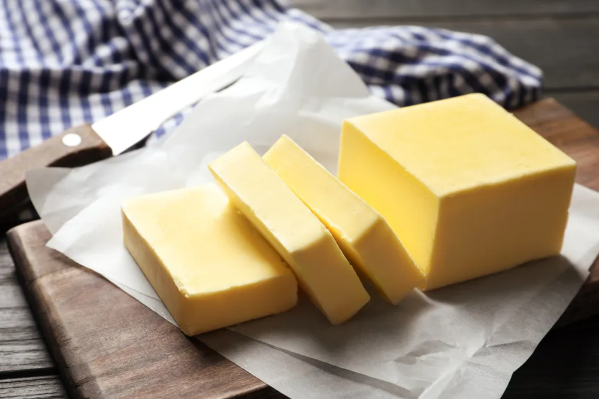

Is Margarine Good For You?

- Margarine is a popular spread and baking ingredient that many use instead of butter, but you might be wondering whether alternatives would be healthier.
- Of course, not all kinds of margarine are created equal. For instance, whether you use harder stick margarine or softer tub margarine can make a difference.
- Margarine isn’t the only butter alternative you could use in baking or as a spread, there are other substitutes like olive oil and apple butter .
Margarine is a common substitute for butter. But how much do you know about it? Some say it’s healthier than butter, although it’s more complex than that. To help determine whether margarine is good for you, it’s important to understand what it is, the different types, and the alternatives.
What Is Margarine?
While every margarine on grocery store shelves has its own unique mix of ingredients, margarine is generally “a blend of natural vegetable oils ,” according to Reader’s Digest . The source says palm, palm kernel, and soybean oils are commonly used.
Additionally, margarine often contains salt and water. Some kinds of margarine also add other ingredients for color and taste. If a product is marketed as margarine, then it must meet the FDA Code of Federal Regulations .
Pros and Cons of Stick Margarine
On the one hand, a stick of margarine has no cholesterol, according to Providence . But on the other hand, the source says a stick of margarine has trans fats . When margarine is turned into a solid stick through hydrogenation, trans fat is created.
The source says, “Trans fat raises LDL (bad) cholesterol significantly – much more than saturated fat does.” However, not all types of margarine are created equal. In fact, softer margarine has less trans fat. But does that mean it’s healthy? We’ll dig into that next.
Pros and Cons of Tub Margarine
Providence says, “The harder the margarine, the more trans fat it contains.” So, it can make a difference to buy a tub of softer margarine instead of a harder stick of margarine. Plus, a tub of margarine not only has less trans fat than a stick of margarine but also fewer calories.
And like harder margarine, softer margarine also has no cholesterol. All in all, margarine in a tub has more pros than margarine in stick form. That said, the source recommends reading the label carefully. If the tub lists “partially hydrogenated oil,” then it has trans fat.
Margarine vs. Butter
So, how does margarine stack up against butter? According to the Mayo Clinic , “Margarine usually tops butter when it comes to heart health.” Since margarine is made from vegetable oils while butter is made from animal fat, the source says margarine contains less saturated fat.
As a result, it can help to use margarine instead of butter and softer margarine instead of harder stick margarine. The butter vs. margarine debate isn’t that simple, though. Indeed, Providence says that “the healthiest choice is to skip both of them” because both contain unhealthy fats.
Margarine Alternatives
While it might not be realistic to give up margarine entirely, there are alternatives you can use as a substitute at least some of the time. Whether you need a replacement for margarine in baking or as a spread, we’ve rounded up seven alternatives that could fit the bill.
Potential replacements include olive oil and apple butter , depending on the situation and your preferences. We’ll get into the details and look at each alternative next.
Olive Oil
If you’re baking, then olive oil can work as a margarine replacement. Healthline suggests using 3/4-cups of olive oil for every 1-cup of margarine. It also works as a spread for bread. The source recommends combining olive oil with “basil and pepper for a zesty spread.”
According to CNN , a recent study shows that replacing 5-grams of margarine with the same amount of olive oil can lower the risk of coronary artery disease by up to 7-percent. The study also shows that consuming more than 7-grams of olive oil can lower the risk of any type of heart disease by 15-percent.
Nut Butters
Instead of topping your toast with margarine, consider a nut butter. For instance, your grocery store likely has nut butters made from almonds , cashews, walnuts , and hazelnuts. Of course, good old-fashioned peanut butter is another option.
According to Cedars-Sinai , “Nut butters are loaded with heart-healthy monounsaturated fats.” To get more out of your nut butter, the source recommends picking an option that only has one ingredient — the nut . So, the source suggests skipping options with sugar or hydrogenated oils.
Avocado
Did you know you can substitute avocado with margarine in baking? AZCentral says it’s as simple as replacing 1-cup of margarine with 1-cup of pureed avocado. According to the source, the texture of avocado “replaces fat beautifully.” Plus, avocado has protein and monounsaturated fat .
Additionally, pureed avocado can make a tasty spread. Since it has a rich and creamy texture, it can stand alone as a spread on toast. But if you want to really mix it up, then try avocado toast with smoked salmon . Besides adding flavor, salmon is also high in omega-3 fatty acids .
Apple Butter
Apple butter is another margarine alternative that works as a baking substitute and a spread. If you’re baking, then Foodsguy.com suggests using 1-cup of apple butter for every 1-cup of margarine. And when it comes to a slice of toast, simply spread on some apple butter.
Wondering what apple butter is exactly? Despite the word “butter” being in the name, apple butter isn’t a combination of apples and butter. Instead, the source says apple butter is applesauce cooked down to a consistency similar to butter and margarine.
Light Cream Cheese
Not only is light cream cheese an alternative to margarine as a spread, but it’s also a substitute for margarine in baking. According to Better Homes & Gardens , you can replace 1-cup of margarine with 1-cup of regular or reduced-fat cream cheese.
Since cream cheese can be high in fat and calories, Food Network suggests choosing whipped or light cream cheese. The source says 2-tablespoons of whipped cream cheese or light cream cheese have about 20 to 30 fewer calories than regular cream cheese.
Hummus
The next time you go to spread margarine on your toast, consider hummus instead. As Real Simple puts it, “Pile on the hummus for heart health , bone strength, vitamins, and good digestion.” In other words, it’s a rich source of plant-based protein, calcium, fiber , B vitamins, and heart-healthy fats.
As a result, hummus is a hearty and creamy spread that adds nutritional value to your morning toast. It can also serve as a nutritious sandwich spread. So, consider using hummus rather than slathering margarine or mayonnaise on deli sandwiches.
Cottage Cheese
Cottage cheese is one of the healthiest types of cheese , and it just so happens to make a great alternative to margarine on toast. It’s a soft and creamy cheese that’s easy to spread on bread. According to EatingWell , cottage cheese “has some serious nutrition cred.”
For instance, it’s a good source of calcium, potassium , and protein. In fact, the source says a 1/2-cup of cottage cheese has 13-grams of protein! And because it has a mild flavor, you can even add apple or avocado slices for extra nutrients.
Source: https://activebeat.com/diet-nutrition/is-margarine-good-for-you/